The Circular Train Problem
2024-08-27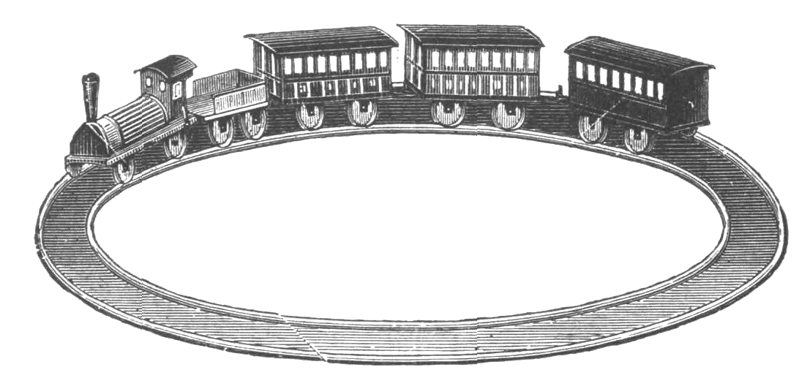
You find yourself trapped in a circular train composed of a finite number of identical train cars that you can walk between. Each train car contains a lightbulb that you can turn on or off. The initial state of each lightbulb is randomly set. You don’t know how many train cars there are, but because the train is a circle, you know that if you walk long enough you’ll eventually get back to the car you started from. Devise a method to figure out how many cars are in the train.
Assumptions
- There are only 2 actions you can take:
- Walk between cars
- Turn lightbulbs on/off
- You have unlimited memory
- You cannot see any other cars besides the one you are currently in
I first heard this puzzle from a friend a couple of years ago (as far as I know, original credit belongs to Ben Tupper). Since then, I’ve given the question to a number of friends, and I always enjoy hearing the variety of ideas they come up with in search of an answer. Interestingly, people’s progression of thought is often quite similar—most of my friends have initially jumped right to vandalism. Smashing the lightbulb, defacing the train car, and breaking out of the train were all answers I heard before I started including “NO BREAKING ANYTHING” in my problem description.
The second idea most people come up with is probably the most intuitive answer: choose a direction, turn every car’s lightbulb off (or on), and keep walking until every lightbulb you come across is off. In reality, this strategy would work reasonably well. With each turned-off lightbulb you see, the more confident you can be that you’ve already looped around the train. Tim Black gives a formula to calculate the number of cars you’d have to walk in order to determine the length of the train with 99% certainty. But with this method, you still cannot know for sure that the lightbulbs you’re coming across weren’t just off from the beginning and the true length of the train is greater than the distance you’ve walked. For the sake of the puzzle, assume your solution must give the number of cars with 100% certainty.
Take some time to think of your own answer to this problem. There are multiple correct answers, but some are more efficient than others (by number of cars you must walk between). Try to find an optimal solution. When I was given the problem, it took me 30 minutes to come up with an answer that worked, but it was still relatively inefficient. I describe my algorithm below using this 8-car train as an example:
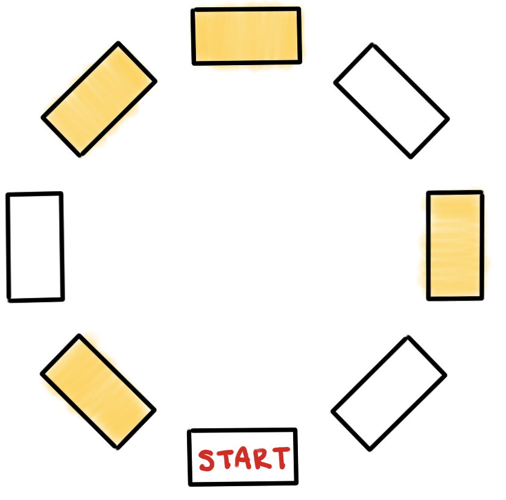
Incrementally turn each lightbulb to the right of your starting position on and each one to the left of your starting position off like so:
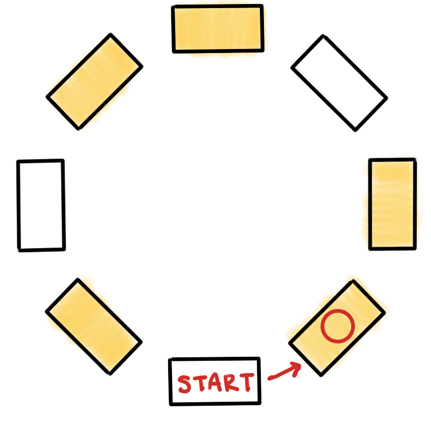
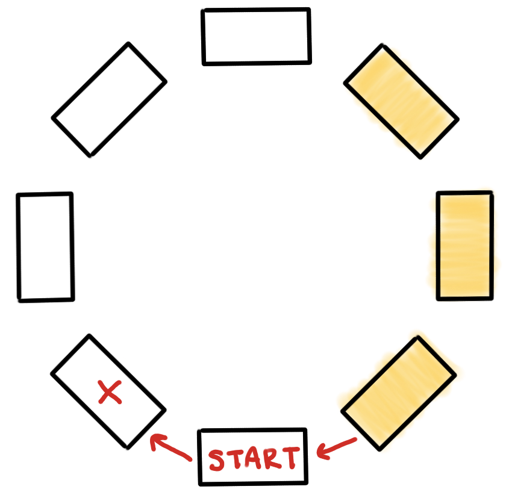
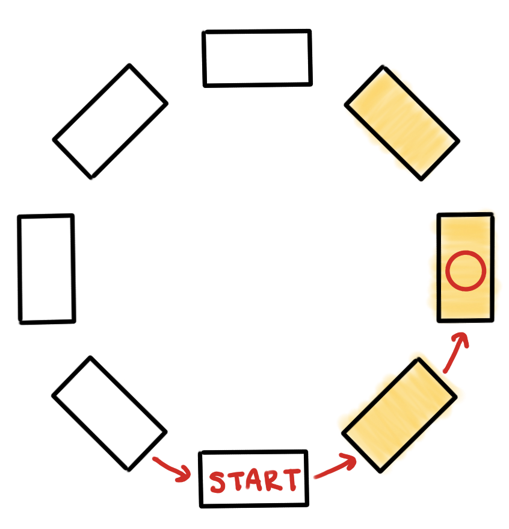
Continue in the same manner until one of two end conditions occurs:
- You encounter a turned-off lightbulb to the right of the starting position which you had previously turned on
- You encounter a turned-on lightbulb to the left of the starting position which you had previously turned off
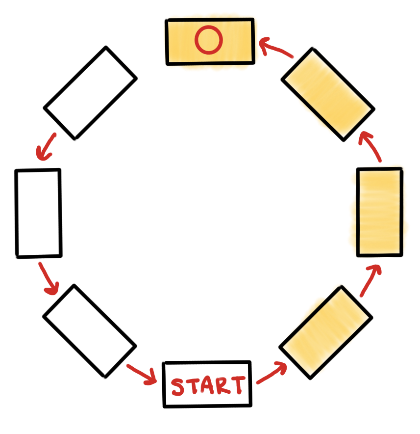
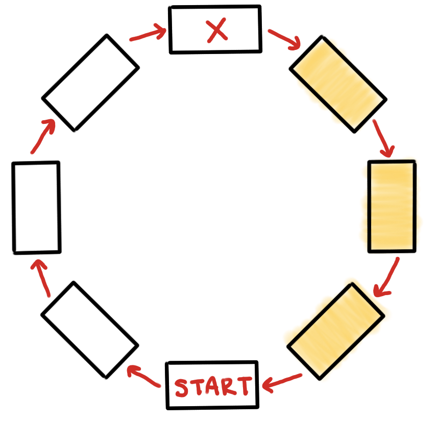
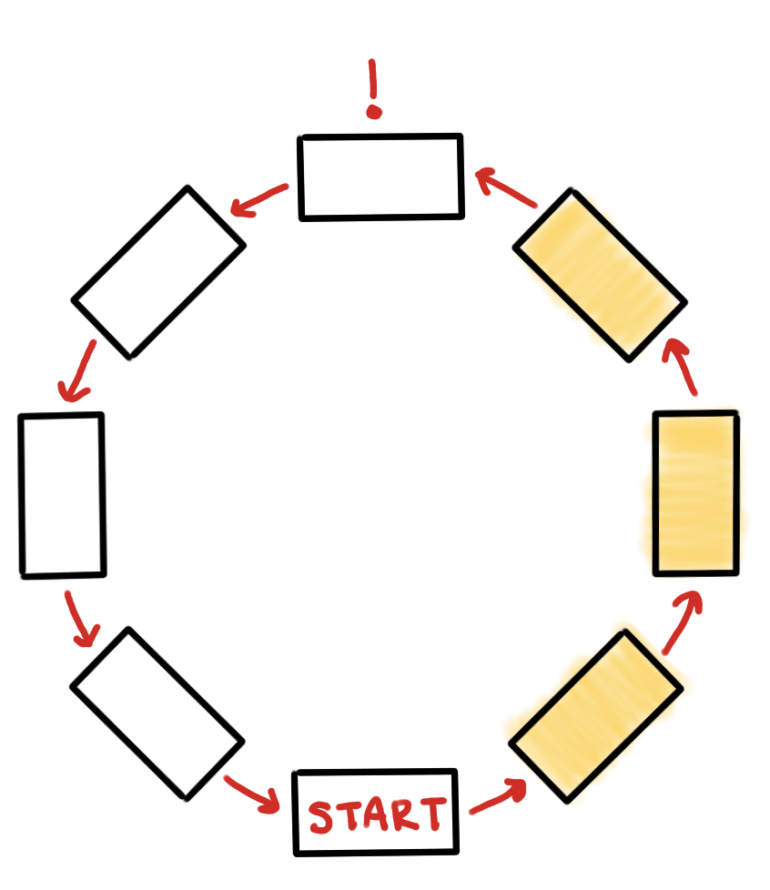
The number of cars you have to walk between before one of the end conditions occurs is given by n(n + 1)/2 + n, where n is the number of cars in the train. Thus, the distance you have to walk grows quadratically with n, and the algorithm’s time complexity is O(n²).
As mentioned before, it’s possible to do better—here, I’ll model the linear time algorithm given by Ben Tupper on the same 8-car train.
Choose a direction and walk a certain number of cars, turning each car’s lightbulb on as you go. When you stop, turn the current car’s lightbulb off, then turn around and walk back to your starting car. If you increment the number of cars you walk by 1, the algorithm proceeds like so:
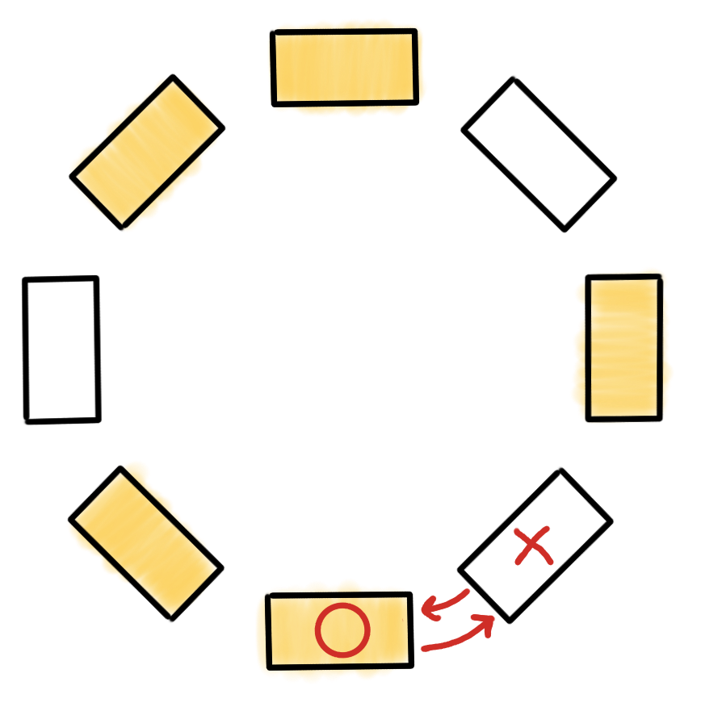
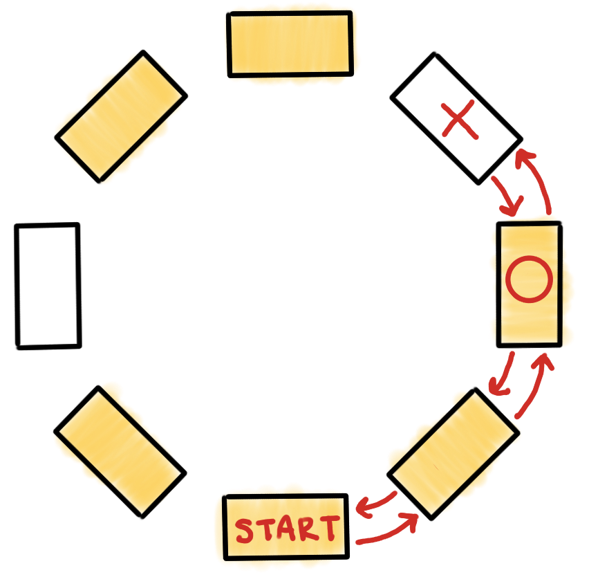
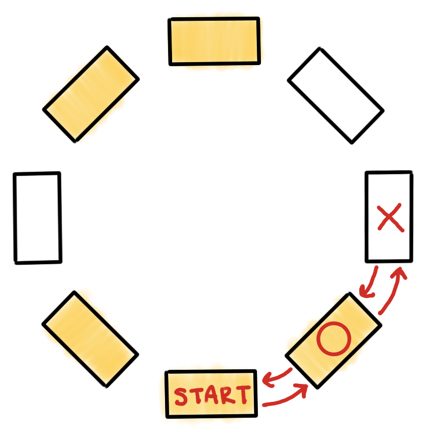
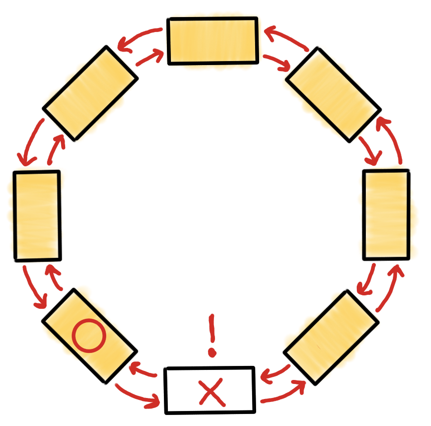
With this incremental strategy, the number of cars you have to walk between before the end condition occurs is given by n(n + 1), with O(n²) complexity. However, you can optimize the algorithm further by walking 2k cars on each iteration, for k = 1, 2, 3, … In the best case (n is a power of 2), you must walk 4n − 2 cars. In the worst case (n is 1 greater than a power of 2), you must walk 7n − 8 cars. So, we have found an efficient O(n) algorithm to determine the number of cars in the train!
I love this problem because it gives a practical and visualizable scenario. Anybody can imagine themselves walking around the circular train, and it’s easy to start thinking of solutions without any prior knowledge or experience in algorithm design. While analyzing the efficiency of the solutions is a great exercise in computational complexity, an interest in algorithms isn’t necessary to have fun solving the riddle, unlike other such puzzles I’ve come across. I think I’ll probably keep giving this riddle to friends until the day I die.